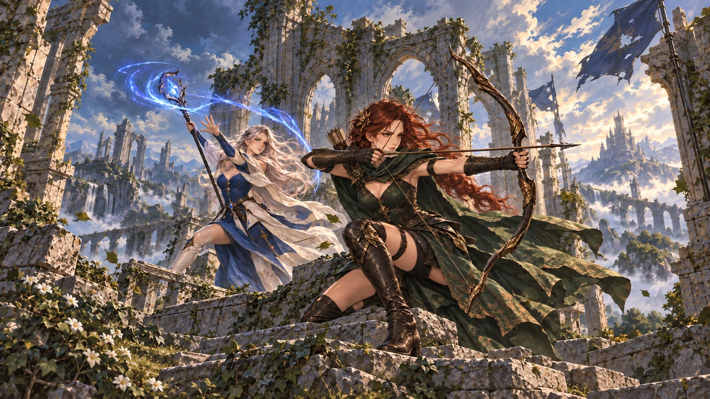
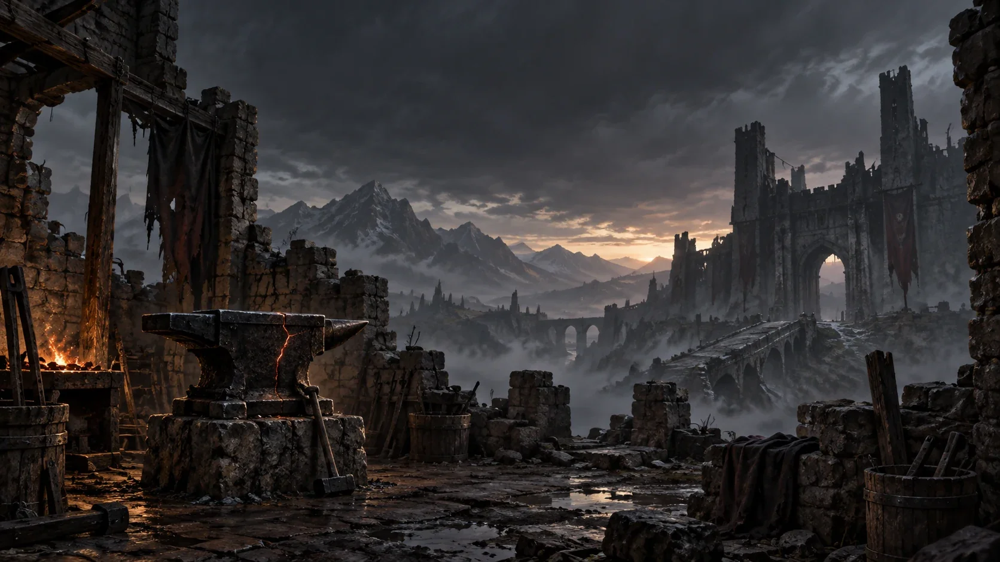
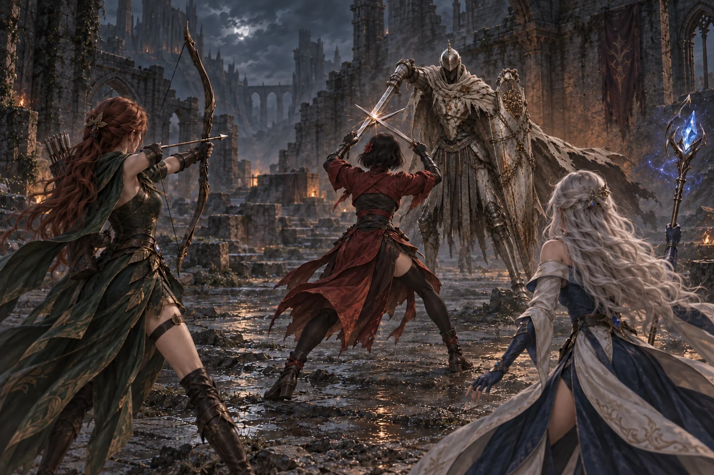

IndieGame.com1인 개발자의 도전, 소울라이크 보스 러시
개발 배경과 그리드 기반 회피·패링 전투를 소개합니다.
원문 보기
게임 소개
동료를 편성하고, 행동 순서와 AP를 설계하세요. 적의 공격에는 실시간 회피와 패링으로 응답하는 리액션 SRPG.

브로큰 택틱스는 현재 Google Play에서 사전등록 중입니다. 출시 및 이용 가능 정보는 스토어에서 확인하세요.
플레이 스크린샷
동료를 편성하고, 행동 순서와 AP를 설계하세요. 적의 공격에는 실시간 회피와 패링으로 응답하는 리액션 SRPG.
화면을 선택하면 크게 볼 수 있습니다. 브로큰 택틱스는 개발 중 화면이며, UI와 콘텐츠는 출시 시 변경될 수 있습니다.
미디어 소개
브로큰 소울을 다룬 기사와 게임 소개를 만나보세요.

IndieGame.com개발 배경과 그리드 기반 회피·패링 전투를 소개합니다.
원문 보기BROKEN SOUL: Boss Rush Demo가 게임 목록에 소개되었습니다.
원문 보기러시아 게임 매체에서 게임 정보와 특징을 확인할 수 있습니다.
원문 보기외부 매체의 기사·소개 페이지로 이동합니다. 일부 콘텐츠는 해당 매체의 언어로 제공됩니다.
게임·계정·구매 문의는 Google Forms로 접수해 주세요. Google 로그인이 필요할 수 있습니다.